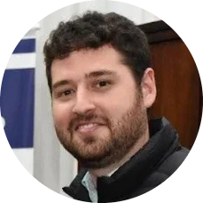

|  | Marcelo Voss Pimpão
Clínico Geral e Endodontista - CRO/PR 20671
Cirurgião dentista, Especialista e Mestre em Endodontia. |
| 2005 - 2009 | Graduacão em Odontologia | |
| PUC/PR - Curitiba - PR | ||
| 2012 - 2013 | Especializacão em Endodontia | |
| PUC/PR - Curitiba - PR | ||
| 2015 - 2017 | Mestrado em Odontologia - Ênfase em Endodontia | |
| PUC/PR - Curitiba - PR |
| 2009 - 2010 | Aperfeicoamento em Cirurgia Oral Menor | |
| Uningá - Curitiba - PR |
2009 - 2001